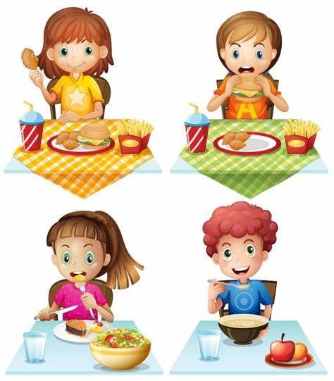
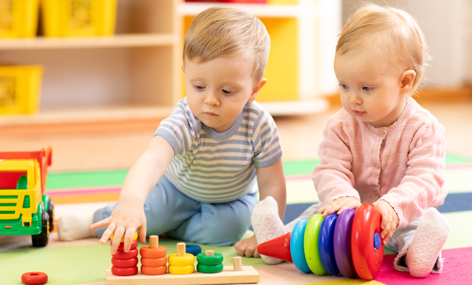
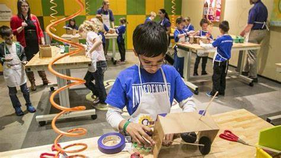

| NOTRE PROGRAMMEVISE A |
LES APPROCHES QUE VOUS POUVEZ VOIR DANS NOS PROGRAMMES |
|  |
Supporter la santé, la saine
alimentation, la sécurité et
le bien-être des enfants (a) |
- Nous offrons des environnements sains et sécuritaires.
- Nous planifions des activités physiques plaisantes et stimulantes chaque jour.
- Les enfants sont respectés comme des individus et des petits êtres humains. La patience et l’amour des
éducatrices est évident au quotidien.
- Les enfants profitent d’un environnement positif, social et sécuritaire lorsqu’ils mangent
- Nous offrons et favorisons des menus santé et la saine alimentation .
|
|  |
Supporter les interactions
positives entre les enfants,
les parents et le personnel
et de soutenir
l’autorégulation des enfants
(b et c) |
- Nous croyons que chaque enfant est unique et qu’il apporte ses propres qualités, habilités, et intérêts au
programme.
- Nous offrons un environnement et des interactions qui posent des défis et offrent des espaces qui invitent les
enfants à explorer, imaginer, réfléchir, créer et résoudre des problèmes.
- Les éducatrices discutent avec les enfants sur le processus des émotions et des comportements. La qualité de
leur relation les amène à être attentives aux besoins de chacun.
- Les enfants sont redirigés d’une façon positive.
- Les éducatrices supportent l’autorégulation des enfants dans un environnement où chacun à la chance
d’apprendre à se gérer physiquement, mentalement et émotionnellement.
- Au besoin et/ou à la demande, les éducatrices offrent un appui positif aux parents.
|
|  |
Favoriser des activités
d’exploration, du jeu et de
la curiosité des enfants qui
sont initiées par les enfants
et supportées par les
(d, e, et g) |
- Les enfants apprennent par le jeu qui est agréable, spontané, actif et naturel.
- Les éducatrices sont des co-apprenantes et font partie du jeu. Elles sont engagées et posent des questions
ouvertes et authentiques pour ensuite émettre des théories sur l’apprentissage des enfants.
- Nous offrons des provocations et des invitations d’apprentissage pour permettre l’exploration et pour stimuler
le jeu avec du matériel à usages multiples qui offrent diverses possibilités.
- Les éducatrices parlent au niveau des enfants et ils sont consultés lors des décisions de groupe.
- Les éducatrices sont flexibles et incorporent des temps calmes lorsqu’elles remarquent une baisse d’énergie
chez les enfants.
|
|
Planifier des milieux et des
expériences
d’apprentissage positifs,
inclusifs et propices à
l’apprentissage et au
développement de chaque
enfant (f)
|
- La communication avec les enfants se fait d’une façon encourageante.
- Nous offrons des activités qui tiennent compte des besoins individuels.
- Les éducatrices prennent en considération les différents styles d’apprentissage et modifient leur approche en
fonction des différents besoins des enfants, y compris les enfants avec des besoins particuliers.
- Le niveau de développement est individuel et unique à chaque enfant. Nous prenons en considération les
facteurs de développement et l’exposition familiale/environnementale.
- L’horaire doit considérer la santé et le bien-être, ainsi que le temps et le niveau de développement des enfants.
|
|
Favoriser la participation
des parents et la
communauté et le dialogue
continue (h et i) |
- Les éducatrices communiquent quotidiennement avec les parents et elles prennent le temps de les accueillir
- Les éducatrices sont empathiques avec tous les parents.
|